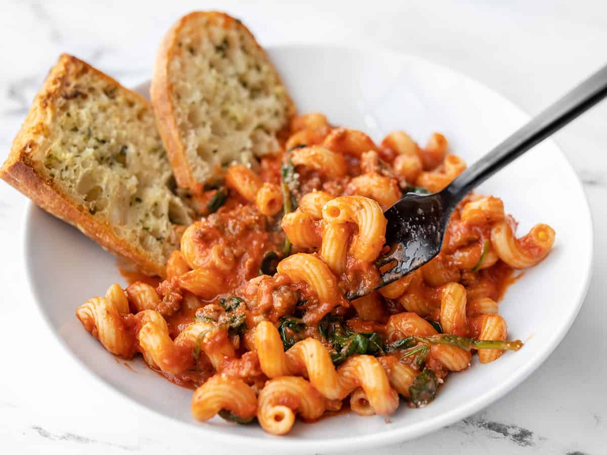

Pasta a la Jack

Description
Pasta a la Jack is a tomato based pasta dish, created by esteemed chef Jack Bzowski.
Utterly delicious yet with only a handful of ingredients, it makes for a perfect work night dinner.
Ingredients
- Tomatoes (1kg)
- Italian sausages (6)
- Garlic cloves (6)
- Pasta of choice (500g)
- Olive oil (1 tbsp)
- Basil (a few sprigs)
- Parmesan (to taste)
- Salt and pepper to taste
Steps
- Run a knife down the entire length of each sausage and peel off each casing.
- Fry the sausages in olive oil in a big pot, making sure to mash the sausages as best you can.
- While the sausages are frying, core and quarter each tomato and peel the garlic cloves.
- Once the sausage is sufficiently browned, remove it, crush and fry the garlic in the remaining oil for 1 minute.
- Add all of the tomatoes to the pot and fry/mash for 20 minutes or so until completely broken down (add more olive oil if necessary).
- Once the tomatoes are fully broken down, add the sausages, basil, and 2 cups of water to the pot. Leave simmering for an hour, stirring every 15 mins or so.
- Once 10 minutes remains, start cooking your pasta of choice in a separate pot in heavily salted water.
- One minute before the pasta's recommended cooking time has passed, drain the pasta and preserve the pasta water.
- Check the sauce and add salt, pepper and parmesan to taste.
- Add the pasta to the sauce pot and cook it in the sauce for an extra minute. Add a few splashes of the reserved pasta water
Home